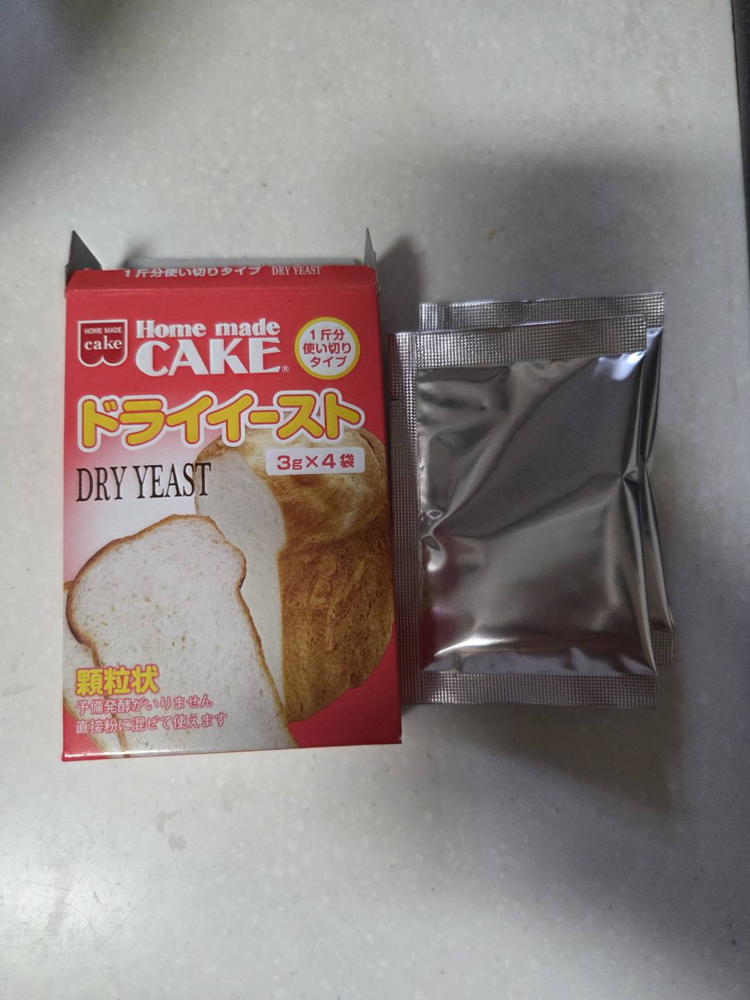
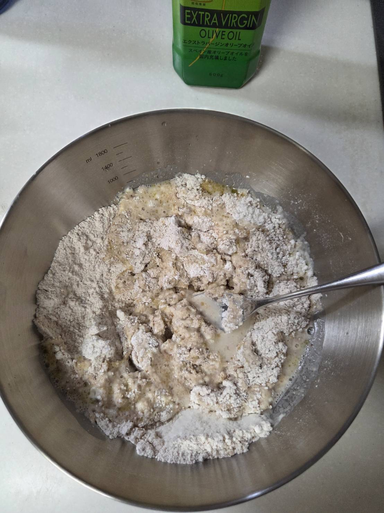
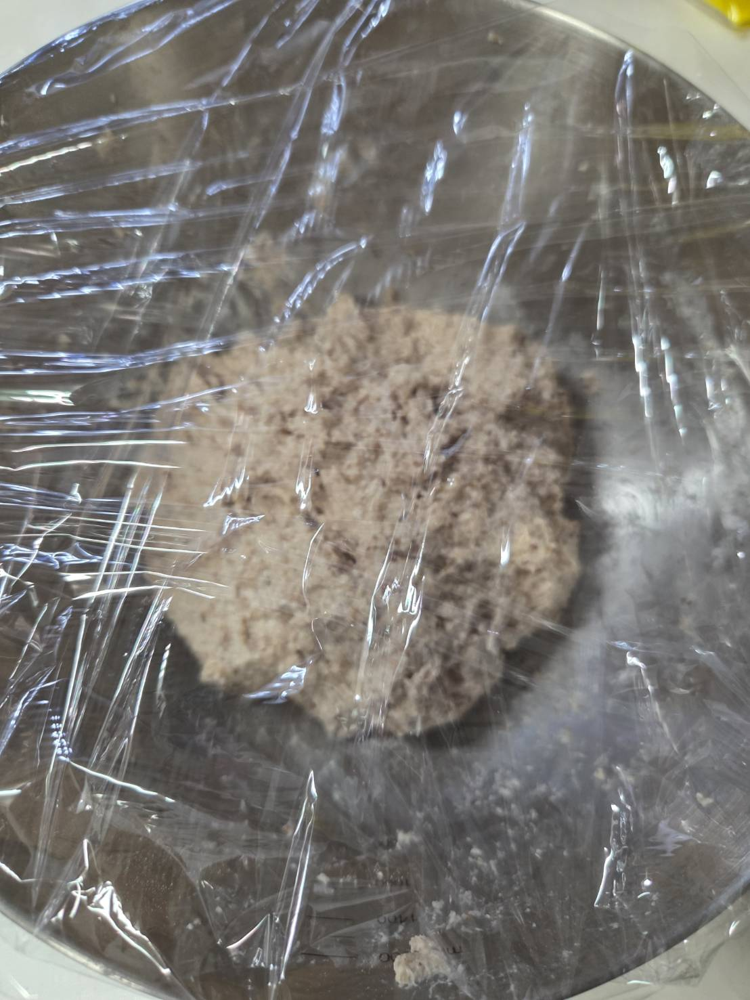
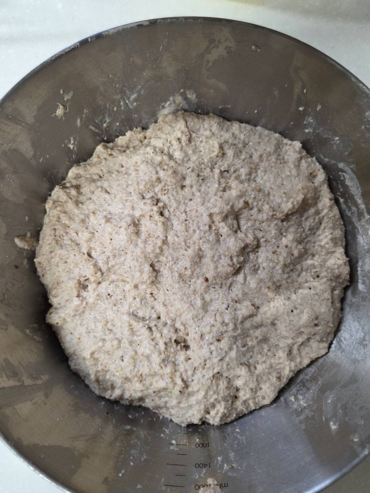
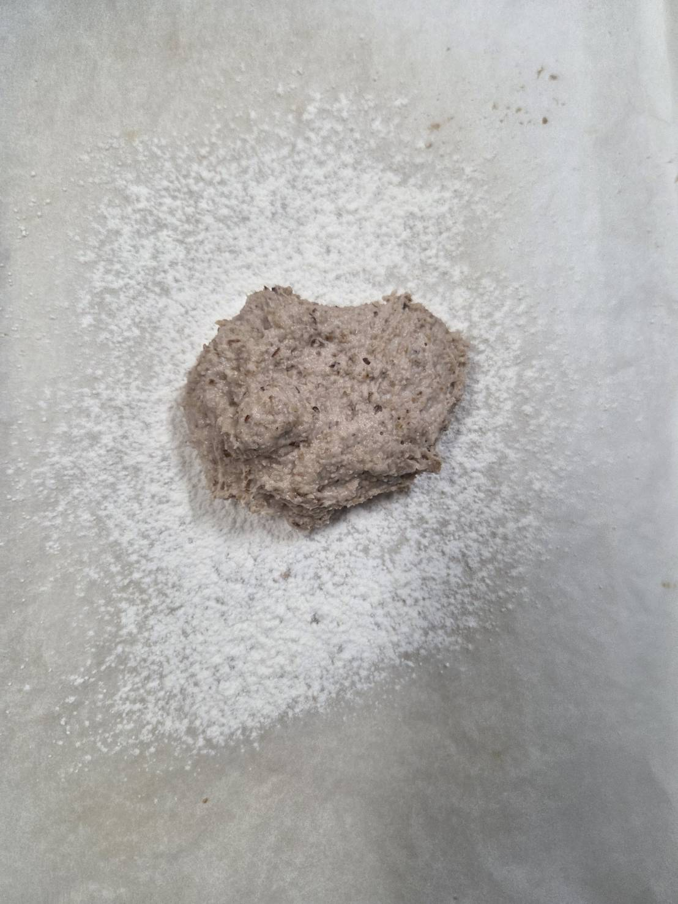
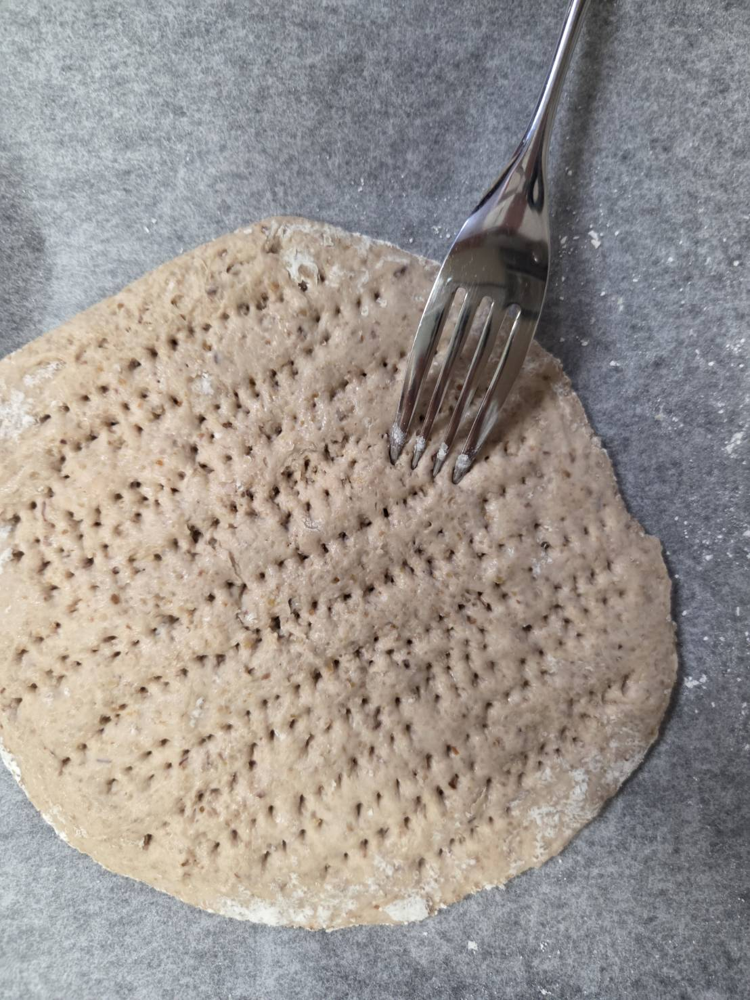
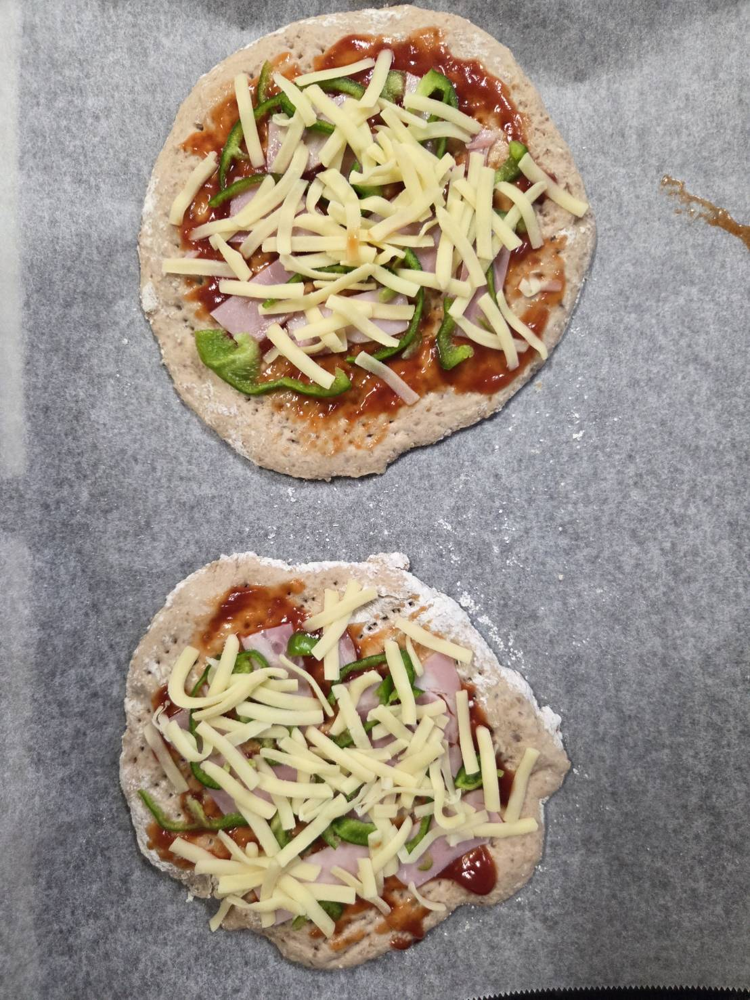
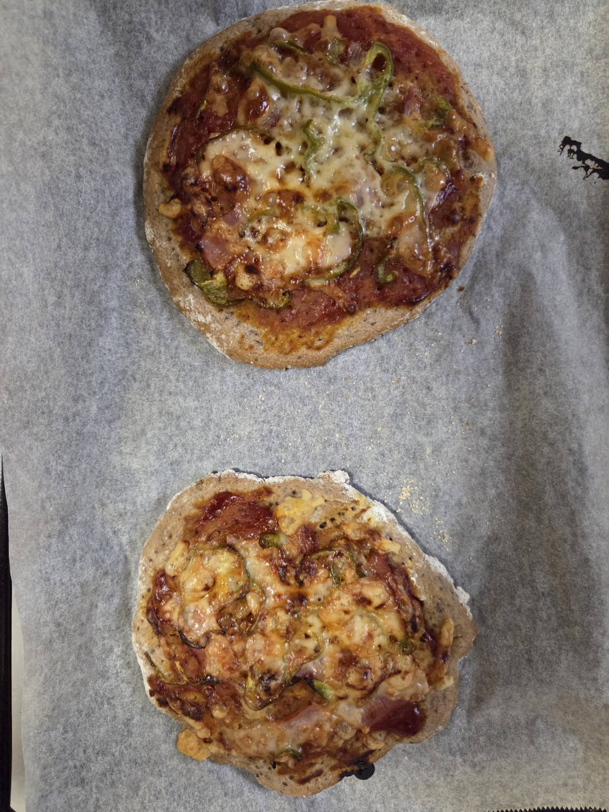

全体の空気を抜きながら生地を枚数分に分け、濡れたキッチンペーパーで30分寝かせる。
ピザの生地を作る。
どんぐりにはグルテン（小麦などに入っている弾力を生むタンパク質）が入っていないため、強力粉を混ぜる。
混ぜないとボロボロと崩れてしまう。

他に、ドライイーストを使用する。
乾燥した酵母が入っているもので、どんぐりに含まれる糖を用いて発酵、膨張する。つまり腐る。
このドライイーストは、生地300gに小袋１つを用いるよう書かれていたため、
どんぐり粉：150g
強力粉：150ｇ
ドライイーストー：一袋
の割合で入れる。

さらに
砂糖：小さじ2
塩：小さじ1
オリーブオイル：大さじ1
を入れ混ぜよう。

まんべんなく混ざったらラップをし、27度前後で1時間放置。

1時間後。倍以上に膨らんでいた。
こりゃあすごい！！
全体の空気を抜きながら生地を枚数分に分け、濡れたキッチンペーパーで30分寝かせる。

打ち粉をしてめん棒で円形に伸ばす。
まな板と生地の間、生地とめん棒が触れる場所に強力粉をまぶすとスムーズに伸ばせる。

形が整ったら生地に穴を開ける。
生地の中で抜けきらなかった気泡が膨張し形が崩れるのを防ぐ役割がある。

好きな具材をのせよう。
あとはオーブンで焼くのみ！

うん、香ばしいカ・ホ・リ